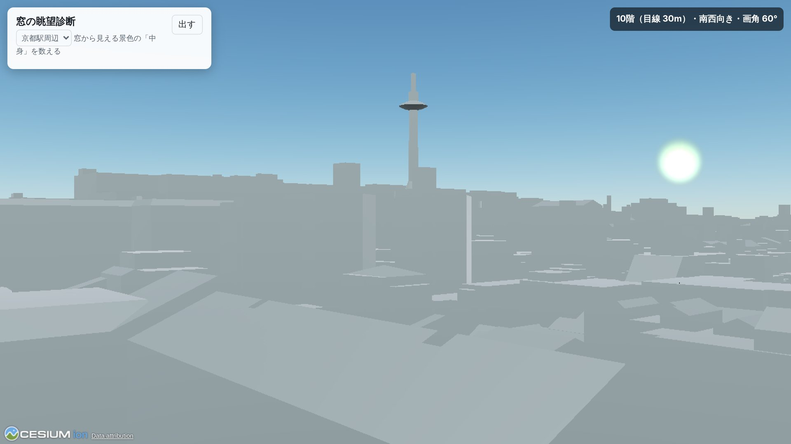
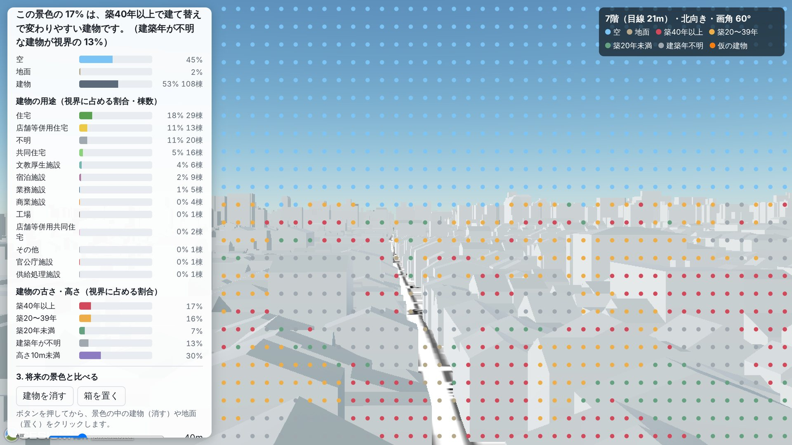
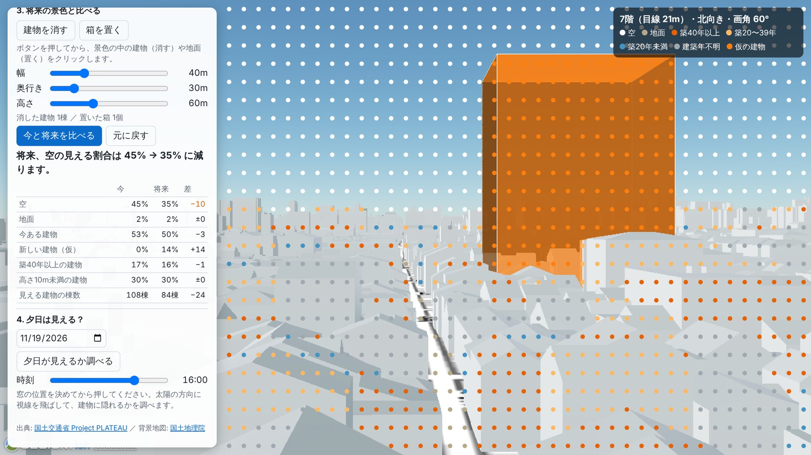
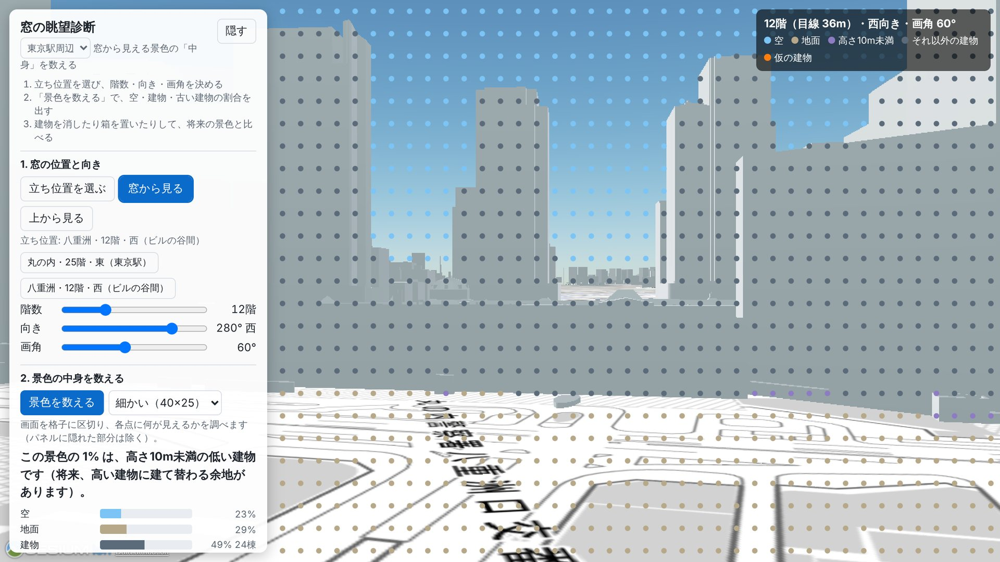

その景色、建て替えで変わりませんか？ — PLATEAU の建物属性で、窓から見える景色の「中身」を数える
→ 景色を建物1棟ずつに分解し、建て替えで変わりやすい景色かどうかを数値で示す

この景色の
17% は
築40年以上で、建て替えで変わりやすい建物です。
京都駅の北・東本願寺の近く、7階の窓から北を見た例。
点の色：赤＝築40年以上、黄＝築20〜39年、緑＝築20年未満、灰＝建築年不明、水色＝空
ブラウザだけで動く1枚の HTML（CesiumJS）。PLATEAU の 3D Tiles を読み込み、建物ごとの属性をその場で集計する。
PLATEAU だからできること
| 空 | 45% |
|---|---|
| 地面 | 2% |
| 建物 | 53%（108棟） |
| 主な用途 | 住宅 29棟、共同住宅 16棟、店舗等併用住宅 13棟 など |
| 築40年以上 | 視界の 17% |
| 建築年が不明 | 視界の 13% |
| 高さ10m未満 | 視界の 30% |

手前の建物を1棟消し、高さ60mの仮の建物を置くと…
空 45% → 35%
| 今 | 将来 | |
|---|---|---|
| 今ある建物 | 53% | 50% |
| 新しい建物（仮） | 0% | 14% |
| 見える建物の棟数 | 108棟 | 84棟 |
日付を選ぶと、日の入り前の太陽の方向に視線を飛ばし、建物に隠れるかを調べる
11月18日は、15:55〜16:45 ごろこの窓から夕日が見える。日の入りは 16:50 ごろ（南西・247°）
京都タワーを望む 10階・南西向きの窓。夏至（6/21）は日の入りが北西になり、この窓からは見えない。

東京・八重洲 12階・西向き（ビルの谷間）：空 23%・建物 49%（24棟）・高さ10m未満は視界の 1%
| 作品・サービス | できること | 窓の眺望診断との違い |
|---|---|---|
| PLATEAU Window （PLATEAU AWARD 2022 受賞） | 窓からの景色を、日時・天候つきで再現して見せる | 景色を建物ごとに数え、変わりやすさを示す。夕日も「見えるか・何時まで」を判定する |
| Google の写実的な3D地図 | 写真のような3D表示 | 建物ごとの属性がない。3D Tiles から抽出・派生したデータの利用は規約で制限されている |
| Shadowmap | 日照と影 | 景色の構成と、建て替えによる変化が中心 |
限界
出典・使用技術